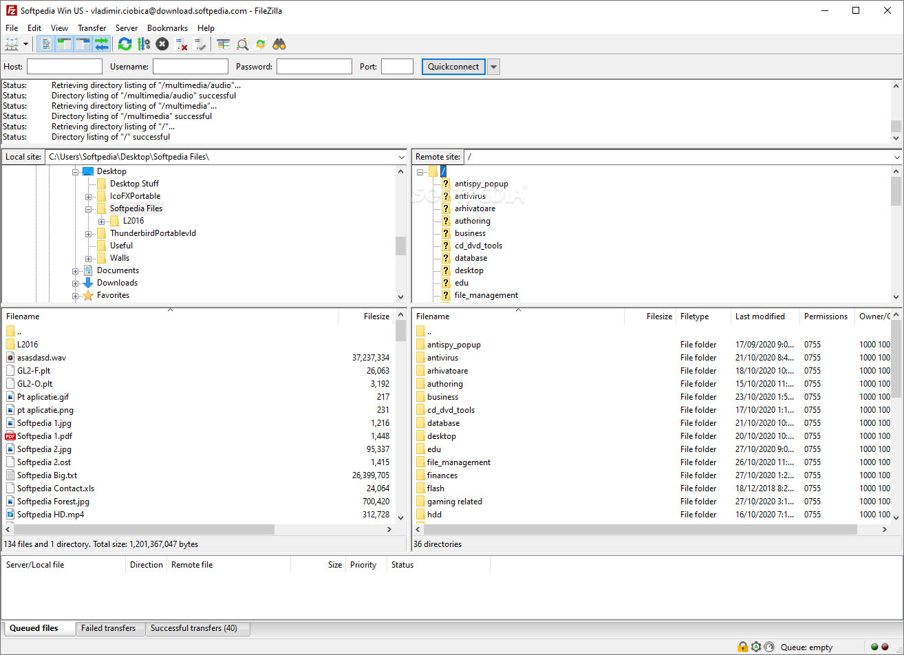

PS3 Artemis
Artemis, un sistema de trampas para videojuegos de Playstation 3 de código abierto creado bajo la iniciativa Project Artemis. Podemos colocar muchos trucos para nuestros juegos de PS3

Para esta Guia
Requisitos para este tutorial
- USB en formato FAT32
Programas para este Tutorial
Archivos Para descargar
| Archivos | Servidores | |
|---|---|---|
| Artemis | Mega | WEB Oficial |
Empezando este Tutorial
- Descargamos el archivo .pkg y el archivo .rar el archivo .rar lo descomprimimos y lo copiamos
- A la USB
- Copiamos a raíz de nuestro USB la carpeta llamada USERLIST con todo su contenido
- Y después Inserte la unidad USB en la ranura USB derecha de su PS3 e inicie Artemis PS3
- A la Consola PS3
- Abriremos un programa en PC para gestionar el FTP por Ej: FileZilla
- Para este método debemos tener la consola y nuestro equipo conectado a la misma RED 
- Una vez dentro colocamos la IP de nuestra consola
- Para saber la ip de nuestra consola nos vamos Ajustes/Ajustes de red
- Y en ajuste y lista de estado de conexión nos saldrá toda la información de la red de nuestra consola
- Solo necesitamos Direccion IP
- Colocamos los datos
- Servidor: la IP de nuestra consola ej: 192.168.0.16
- Puerto: el puerto sería el 21
- Y listo a conexión rápida
- Solo nos queda buscar la ruta para copiar los archivos
- La ruta a navegar a
/dev_hdd0/game/ARTPS3001/USRDIR/ - Y copiamos carpeta USERLIST dentro de USRDIR
- Y listo podemos cerrar todo y usar nuestra consola con la aplicación
- Iniciamos nuestra aplicación de Artemis
- Dependiendo si hay actualizaciones o si es la primera vez que lo ejecutamos le damos aceptar todo para quedar al día la aplicación con

- Para comenzar solo debemos ir al menú Cheats
- Dentro buscamos el ID del juego que queremos cargar los trucos
- Cuando encontremos el juego le damos a la
- Nos mostrara todos los trucos disponibles para el juego
- Marcamos los trucos que queremos activar con
- Una vez listo le damos a
 para volver al menú anterior y para volver al menú principal
para volver al menú anterior y para volver al menú principal - Una vez en este menú le damos a Start Game la consola emite un pitido
- Ahora solo vamos al juego que seleccionamos y le damos a botón y después al botón

- Nos notificara con Artemis PS3 Attached and Wrote y listo
- Y volvemos a presionar el botón PS y listo solo probamos los trucos
- Y listo probamos nuestros juegos con los trucos recién cargados algunos trucos pueden no funcionar solo hay que ir probando
×